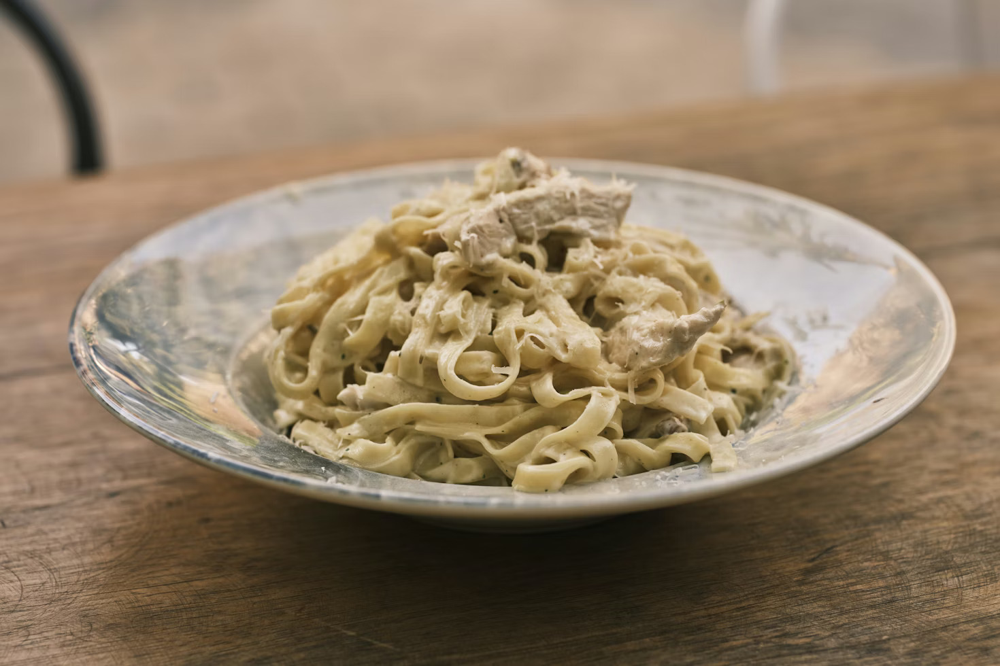

Fettuccine Alfredo
Description
Transport yourself to Italy with just one bite of this classic Fettuccine Alfredo. Perfectly al dente fettuccine noodles are tossed in a creamy Alfredo sauce with hints of garlic and rich, balanced flavors from Parmesan and Romano cheeses. Topped with bite-sized pieces of seared chicken and finished with a sprinkle of parsley.
Ingredients
- 12 ounces fettuccine pasta
- 1 pound boneless, skinless chicken breast
- 2 tablespoons butter
- 2 cloves garlic, minced
- 1 cup heavy cream
- ¼ to ½ freshly grated Parmesan cheese
- ¾ to 1 cup freshly grated Pecorino Romano cheese
- ½ teaspoon salt, plus more for pasta water
- ¼ teaspoon freshly ground black pepper, or to taste
- Pinch of ground nutmeg (optional)
- Chopped fresh parsley, for garnish (optional)
Steps
- Bring a large pot of well-salted water to a boil and cook the fettuccine until al dente, reserving a small amount of the pasta water before draining.
- Season the chicken with salt and pepper, then cook it in a skillet with a little butter or oil over medium heat until fully cooked and lightly browned, and set it aside after slicing or shredding.
- Melt the butter in the same skillet over medium-low heat and add the garlic, cooking briefly until fragrant without allowing it to brown.
- Pour the heavy cream into the pan and stir, letting it gently simmer for a few minutes until it begins to thicken slightly.
- Lower the heat and slowly stir in the grated Parmesan cheese until it melts completely and forms a smooth, creamy sauce, seasoning with black pepper and a small pinch of nutmeg if desired.
- Add the cooked fettuccine to the sauce and toss to coat evenly, using some of the reserved pasta water to loosen the sauce if it becomes too thick.
- Return the chicken to the pan and stir everything together, allowing it to warm through for one to two minutes.
- Taste and adjust seasoning as needed, then serve immediately with additional Parmesan and optional parsley.